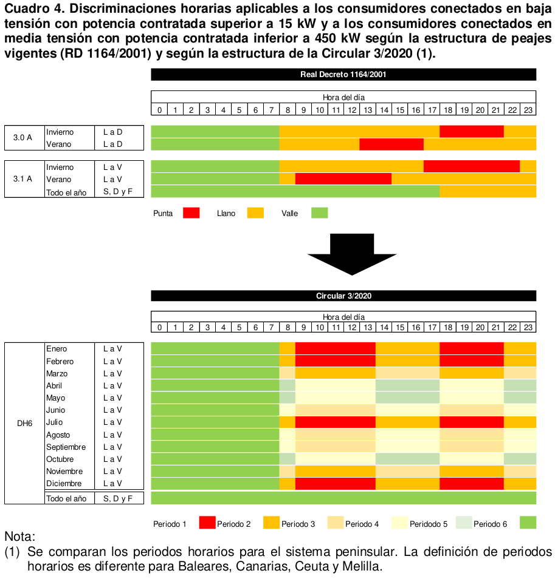
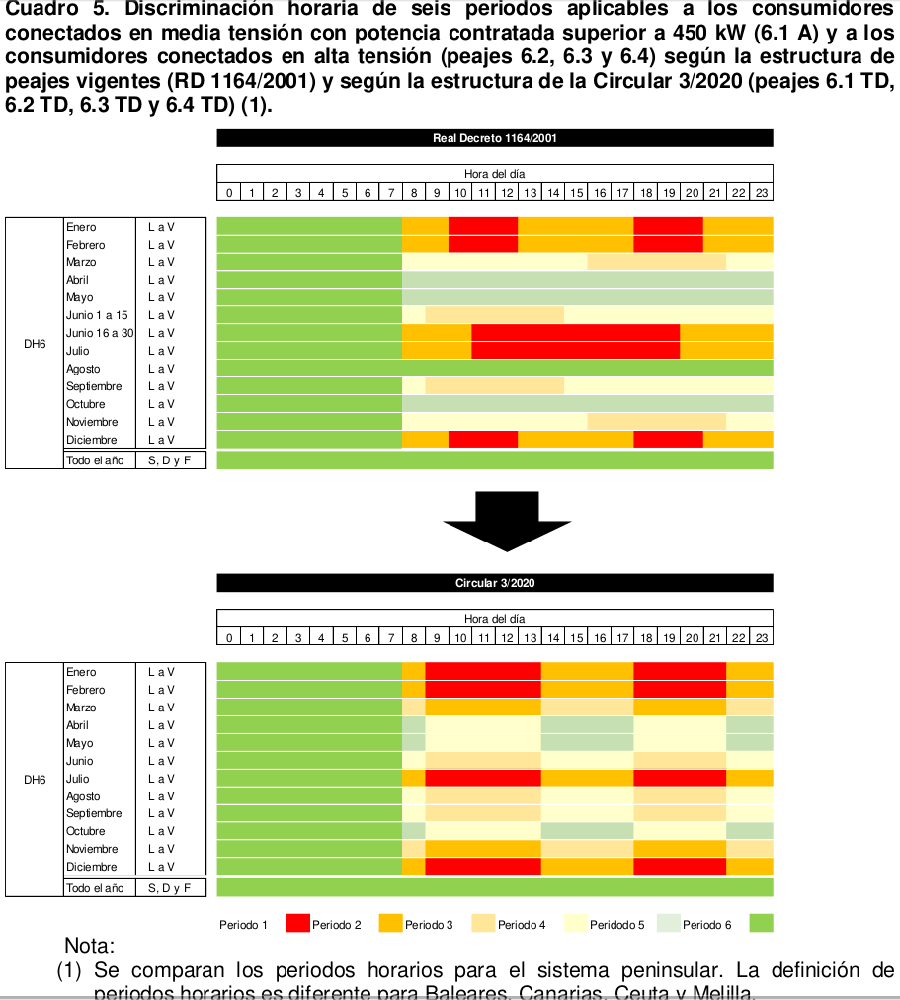
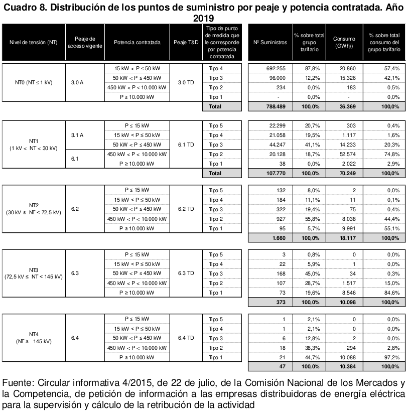
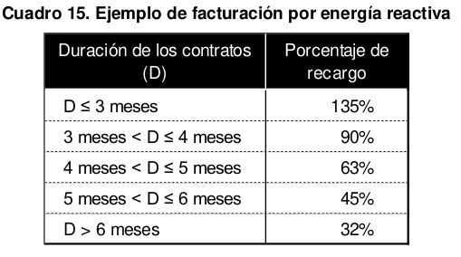
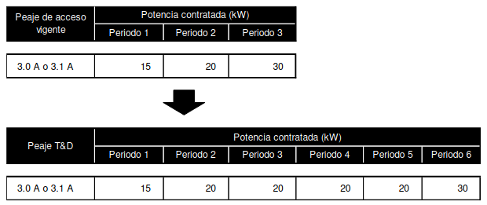
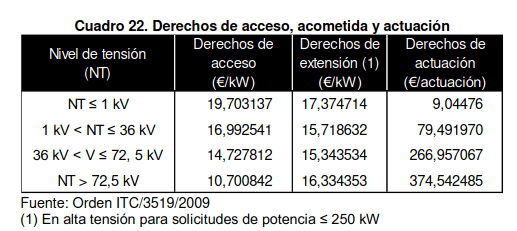
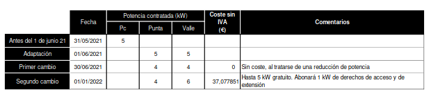
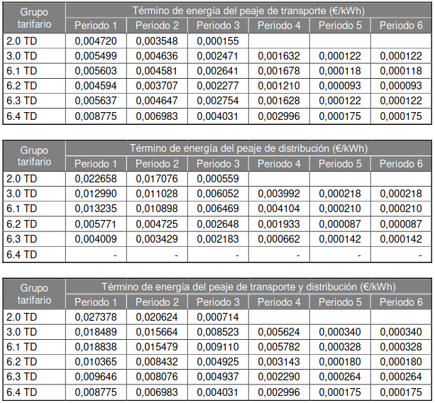

Factura de la luz
1. Objeto
El Real Decreto-ley 1/2019, de 11 de enero 1 , modifica las competencias de la CNMC como autoridad reguladora nacional en relación a la metodología para el establecimiento de los peajes de transporte y distribución. En particular, establece que la CNMC deberá fijar, mediante circulares, previo trámite de audiencia y con criterios de eficiencia económica, transparencia, objetividad y no discriminación y de acuerdo con las orientaciones de política energética la estructura y la metodología para el cálculo de los peajes de acceso a las redes de electricidad destinados a cubrir la retribución del transporte y la distribución. En cumplimiento de lo anterior, el pasado 24 de enero de 2020 fue publicado en el Boletín Oficial del Estado la Circular 3/2020 2 , de 15 de enero, de la Comisión Nacional de los Mercados y la Competencia, por la que se establece la metodología para el cálculo de los peajes de transporte y distribución de electricidad. La Circular 3/2020 introduce algunos cambios respecto de la estructura y condiciones de facturación de peajes de acceso vigentes. Estos cambios han dado lugar a diversas consultas por parte de empresas, Comunidades Autónomas y consumidores sobre diversos aspectos. El objeto del presente anexo es aclarar las dudas planteadas por distintos agentes, con el fin de facilitar la comprensión e implementación de la Circular 3/2020. A los efectos anteriores, para facilitar la compresión de todos los agentes, se procede en primer lugar, a enmarcar el contenido la Circular 3/2020 en el esquema general precios al que debe hacer frente un consumidor por el suministro de energía.
2. Peajes y cargos
Los consumidores en su factura de electricidad deben pagar además de la energía que consumen, los peajes de acceso, el margen de comercialización y los impuestos (impuesto eléctrico e impuesto sobre el valor añadido).
El componente de energía se determina en función de los precios del mercado mayorista y, en su caso, de las condiciones libremente pactadas entre consumidores y comercializadores, mientras que los peajes de acceso vigentes son los precios regulados que deben pagar los consumidores para cubrir los costes regulados del sistema eléctrico, tales como las redes de transporte y distribución, la retribución de las energías renovables, el diferencial del coste de energía de los territorios no peninsulares y las anualidades para cubrir el déficit de tarifas de ejercicios anteriores. El margen de comercialización es el pago por los servicios que presta el comercializador. La Ley 24/2013, de 26 de diciembre, del Sector Eléctrico, introduce la diferenciación de los peajes de acceso hasta entonces vigentes en dos conceptos diferenciados: los peajes de acceso a las redes de transporte y distribución y los cargos necesarios para cubrir el resto de los costes regulados. La diferenciación de peajes y cargos responde a la terminología utilizada en las directivas europeas y a la conveniencia de diferenciar los pagos por contribución a la cobertura de los costes de las redes de transporte y distribución, peajes, de aquellos pagos relacionados con otros costes regulados del sistema, cargos. El Real Decreto-ley 1/2019, de 11 de enero, transfirió a la Comisión Nacional de los Mercados y la Competencia la potestad para establecer, mediante circular, la estructura y la metodología para el cálculo de los peajes de acceso a las redes de electricidad destinados a cubrir la retribución del transporte y la distribución, previo trámite de audiencia y con criterios de eficiencia económica, transparencia, objetividad y no discriminación y de acuerdo con las orientaciones de política energética. Por otra parte, el Real Decreto Ley 1/2019, de 11 de enero, asigna al gobierno la competencia para el desarrollo y aprobación de la metodología de cálculo de los cargos que deberán satisfacer los consumidores y, en su caso, los productores de energía eléctrica, y que se destinarán al resto de costes de sistema 3 (entre otros, la retribución específica de la renovables, el extracoste de generación en los territorios no peninsulares y las anualidades para la recuperación del déficit). En el ejercicio de esta competencia el pasado 24 de enero de 2020 fue publicada en el Boletín Oficial del Estado la Circular 3/2020, de 15 de enero, por la que se establece la metodología para el cálculo de los peajes de transporte y distribución de electricidad. El Real Decreto 148/2021, de 9 de marzo, por el que se establece la metodología de cálculo de los cargos del sistema eléctrico, establece una estructura de
precios para los cargos consistente con la estructura de peajes definida en la Circular 3/2020. Los costes de las redes de transporte y distribución y los cargos se repercuten a todos los consumidores según sus características, independientemente de que el consumidor adquiera su energía través de un comercializador libre o esté suministrado al Precio Voluntario para el Pequeño Consumidor (PVPC). Tanto los peajes de transporte y distribución como los cargos son únicos en todo el territorio nacional. En relación con lo anterior, se indica que aquellos consumidores cuya potencia contratada sea inferior a 10 kW pueden optar por contratar el suministro de electricidad con un comercializador de referencia 4 o con un comercializador libre. Los consumidores cuya potencia contratada sea superior a 10 kW deben contratar el suministro de electricidad siempre con un comercializador libre.
a) Suministro de energía a través del comercializador de referencia. Este precio se compone de la suma de los peajes de transporte y distribución, los cargos, el coste de la energía y el coste del margen del comercializador de referencia. Todos los componentes del PVPC son regulados a excepción del coste de la energía que se establece con base en el precio horario registrado en el mercado mayorista, así como el coste de los servicios de ajuste 5 . El PVPC es el precio máximo que los comercializadores de referencia podrán aplicar a sus clientes 6 . b) Suministro de energía a través del comercializador libre. El precio final de la electricidad en el mercado libre presenta los mismos componentes que el PVPC, con la particularidad de que el coste de la energía y el margen de comercialización son libremente establecidos por el comercializador.

Como se verá más adelante la estructura de peajes y cargos definidas en la Circular 3/2020 y el Real Decreto 148/2021, de 9 de marzo, por el que se establece la metodología de cálculo de los cargos del sistema eléctrico difieren de la estructura de peajes de acceso vigentes, siendo los cambios más relevantes los relativos al número de periodos horarios de los que constan los términos de facturación y la definición de los propios periodos horarios. Cabe señalar en particular que, a partir de su entrada en vigor, todos los consumidores tendrán peajes y cargos con precios diferenciados en función del momento en que se consuma 7 . En particular, para todos los consumidores conectados en baja tensión con potencia contratada inferior a 15 kW se diferencia el término de energía en tres periodos (punta, llano y valle) y el término de potencia en dos periodos (punta y valle). Para el resto de consumidores (incluidos los actualmente acogidos a los peajes 3.0 A y 3.1 A) los términos de potencia y energía del peaje constarán de seis periodos horarios. La nueva estructura de peajes y cargos será de aplicación a partir del 1 de junio de 2021, fecha de eficacia de los cargos a tenor del citado Real Decreto.
3. Ámbito de aplicación
La Circular será de aplicación para la determinación de los precios de los peajes de acceso a las redes transporte y distribución de los consumidores, los
autoconsumidores por la energía consumida de la red y por la energía autoconsumida en el caso instalaciones próximas a través de red, las instalaciones de generación por sus consumos propios y los intercambios de energía eléctrica que se realicen con destino en países no miembros de la Unión Europea. En consecuencia, quedan exentos del pago de peajes por el acceso a las redes de transporte y distribución: a) los productores de energía eléctrica por cada una de sus instalaciones por la energía neta generada vertida a la red, b) las empresas transportistas y distribuidoras por sus consumos propios, c) la energía consumida por los bombeos de uso exclusivo para la producción de energía eléctrica y las baterías de almacenamiento de energía conectadas en la red de transporte o distribución. Con respecto al ámbito de aplicación de los peajes se realizan las siguientes aclaraciones:
El artículo 2.2.a) establece que quedan exceptuados del pago de peajes los productores de energía eléctrica por las inyecciones en la red de transporte o distribución. La excepción en el pago de estos peajes es de aplicación desde la entrada en vigor de la Circular 3/2020, es decir, desde el sábado 25 de enero de 2020, conforme a lo establecido disposición final única de esta Circular. Asimismo, según el artículo 2.2.b) están exentos del pago de peajes la energía empleada por las empresas de transporte y distribución de energía eléctrica como consumos propios para el funcionamiento de sus instalaciones, que tendrá el mismo tratamiento que las pérdidas en sus redes. No es necesario solicitar el reconocimiento de dichos consumos propios al Ministerio, al objeto de que sea reconocida la exención en el pago. La excepción en el pago también se produce desde el sábado 25 de enero de 2020.
4. Estructura de peajes
La Circular 3/2020, de 15 de enero, introduce los siguientes cambios respecto de la estructura de peajes de acceso vigentes: a) Se unifican en un único peaje, el peaje 2.0 TD, los peajes 2.0 A y 2.1 A en todas sus modalidades (sin discriminación horaria, con discriminación horaria nocturna y con discriminación horaria supervalle), introduciéndose, además, la posibilidad de diferenciar la potencia contratada en dos periodos (punta y valle) y la discriminación horaria del consumo en tres periodos para todos los consumidores acogidos a este peaje.
b) El peaje vigente 3.0 A pasa a constar de seis términos de energía y seis términos de potencia. c) Los peajes de media tensión serán de aplicación a los suministros conectados a redes de tensión superior a 1 kV e inferior a 30 kV, unificándose los peajes 3.1 A y 6.1 en un único peaje, el peaje 6.1 TD. d) A los consumidores conectados en redes de tensión superior a 30 kV e igual o inferior a 72,5 kV les será de aplicación el peaje 6.2 TD, independientemente de l e) A los intercambios internacionales les será de aplicación el peaje 6.4 TD, con las especificidades establecidas para los mismos en el artículo 9 de la Circular 3/2020.
En el cuadro inferior se muestra la equivalencia entre la estructura de los peajes de acceso vigentes y los peajes de transporte y distribución de la Circular 3/2020.

Adicionalmente, teniendo en cuenta las consultas recibidas, con respecto a la definición de la estructura de peajes del artículo 6 se realizan las siguientes aclaraciones:
• El peaje 2.0TD es de aplicación a suministros conectados en redes de tensión no superior a 1 kV, con potencia contratada inferior o igual a 15 kW en todos los periodos. Este peaje consta de dos términos de potencia contratada. Se trata del único peaje para el que no aplica el requisito de potencias crecientes. Es decir, la potencia contratada en el periodo de valle podrá ser superior o inferior a la potencia contratada en el periodo de punta. • En el Peaje 3.0 TD, de aplicación a los suministros de baja tensión con potencia contratada superior a 15 kW en alguno de los seis períodos horarios, no se establece ningún límite a la potencia contratada mínima en alguno de los periodos, si bien la potencia contratada debe que ser superior a 15 kW en
alguno de los periodos. Tampoco se establece ningún límite a la potencia contratada máxima, que dependerá de la máxima admisible de la instalación. En este peaje las potencias contratadas son en orden igual o creciente. • En el peaje 6.1 TD, de aplicación a los suministros conectados en tensiones superiores a 1 kV e inferiores a 30 kV (nivel de tensión tarifario NT1) no se establece ninguna limitación de potencia contratada mínima o máxima. Desaparece, por tanto, el límite actual de que alguna de las potencias contratadas sea superior a 450 kW. En este peaje las potencias contratadas son en orden igual o creciente.
5. Periodos horarios
La Circular 3/2020 ha modificado, además de la estructura de peajes, la definición de los periodos horarios para todos los consumidores.
Bajo la estructura de peajes vigentes, a los consumidores con potencia inferior o igual a 10 KW les es de aplicación el peaje 2.0 A, pudiendo optar por no diferenciar el consumo (esto es, todas las horas del día cuestan lo mismo) o bien diferenciar el consumo en dos periodos (la denominada tarifa nocturna, en que se aplican dos precios en función del momento del día en que se consume) o en tres periodos (la denominada tarifa supervalle, en que se aplican tres precios diferentes en función del momento del día en que se consume). Análogamente, aquellos consumidores con potencia contratada mayor de 10 kW y menor o igual de 15 kW (peajes 2.1 A) pueden optar por no diferenciar el consumo o por diferenciarlo en dos o tres periodos horarios. Cabe señalar que en las discriminaciones horarias vigentes no se diferencia entre días laborables, sábados, domingos y festivos. En el momento en que sea de aplicación la estructura de peajes establecida en la Circular 3/2020, todos los consumidores conectados en redes de baja tensión con potencia contratada inferior o igual a 15 kW estarán acogidos al mismo peaje de redes (denominado en la Circular peaje 2.0 TD) y pasarán a disponer de una estructura de precios diferenciada en dos periodos para la potencia (punta y valle) y tres periodos (punta, llano y valle) para la energía. Se indica que el periodo de punta definido para la potencia resulta de la agregación de los periodos de punta y llano definidos para la energía. En el cuadro inferior se comparan las posibles discriminaciones horarias a las que puede optar un consumidor bajo la estructura de peajes de acceso vigentes con la discriminación horaria de la Circular 3/2020. Se indica que los periodos horarios de punta y llano de la Circular 3/2020 se desplazan una hora hacia adelante en las Ciudades Autónomas de Ceuta y Melilla.

Como se ha indicado, los consumidores conectados en baja tensión con potencia contratada superior a 15 kW (peaje 3.0 A) y los consumidores conectados en media tensión con potencia contratada inferior a 450 kW (peaje 3.1 A) pasarán de una discriminación horaria de tres periodos a una discriminación horaria de seis periodos. Bajo la estructura de peajes de acceso vigentes este colectivo de consumidores de consumidores cuenta con una diferenciación de precios en tres periodos en la que únicamente se considera una punta (de tarde en los meses de invierno, y de mañana en los meses de verano). Adicionalmente, para el colectivo de consumidores conectados en media tensión, se diferencia entre días laborables y no laborables. Bajo la estructura de peajes de la Circular 3/2020, todos los consumidores contarán con tres periodos horarios diferentes en los días laborables.

Por último, en el cuadro inferior se compara la discriminación horaria de seis periodos de aplicación a los peajes vigentes con los definidos en la Circular 3/2020. Se observa que, como consecuencia del reajuste de los periodos horarios, todos los días laborables, independientemente de la temporada a la que pertenezcan, contarán con la misma diferenciación de periodos, si bien el nivel de precios de cada uno de los periodos variará en función de la temporada a la que pertenezcan.

6. Condiciones de aplicación de los peajes de transporte y distribución
Conforme al artículo 9 de la Circular 3/2020, los peajes de transporte y distribución constan de un término de facturación por potencia contratada, un término de facturación por energía consumida y, en su caso, un término de facturación por la potencia demandada y un término de facturación por la energía reactiva. No obstante, se plantean las siguientes particularidades:
a) A los consumidores conectados en baja tensión con potencia contratada igual o inferior a 15 kW: i. No les será de aplicación la facturación por potencia demandada cuando dispongan de Interruptor de Control de Potencia (ICP). ii. No les será de aplicación la facturación por energía reactiva. b) En el ámbito de las conexiones internacionales:xx i. Dado que no se contrata potencia, la facturación de potencia, en cada período tarifario, se calculará multiplicando el precio establecido para el término de potencia por la suma de las potencias efectivamente programadas en cada hora divididas por el número total de horas del período. En consecuencia, no procede la facturación por potencia demandada. ii. No será de aplicación el término de facturación de energía reactiva. c) De acuerdo con el artículo 5.6 del Real Decreto 1164/2001 los suministros de socorro se tratarán como suministros independientes y como tales se facturarán, excepto si la alimentación la realiza la misma empresa distribuidora, en cuyo caso se facturará, únicamente, el 50 por 100 del término de potencia contratada del suministro de socorro.
En el resto de los casos, será de aplicación la facturación por potencia demandada y por energía reactiva cuando proceda.
6.1. Facturación por potencia
La Circular 3/2020 establece que la facturación por potencia contratada será el sumatorio resultante de multiplicar la potencia contratada en cada período horario por el precio del término de potencia correspondiente, según la fórmula siguiente: $$ FP=\sum_{p=1}^{p=i}T_{P_p} * P_{C_p} $$
Donde:
- \(FP\): Facturación de la potencia
- \(T_{P_p}\): Precio del término de potencia del periodo horario p, expresado en €/kW y año
- \(P_{C_p}\) Potencia contratada en el período horario p , expresada en kW.
- i :Número de periodos horarios de los que consta el término def acturación de potencia del peaje correspondiente.
La facturación de potencia se prorrateará por el número de días de cada año (normal o bisiesto), o el número de horas en el caso de contratos de duración inferior al día, que comprende el periodo de facturación, considerando que el día de lectura inicial está excluido y el día de lectura final está incluido. A modo ilustrativo, en el Cuadro 6 se muestra la facturación por potencia contratada para tres consumidores, acogidos a los peajes 2.0 TD, 3.0 TD y 6.1 TD, a los términos de potencia de la Resolución de 18 marzo de 20218, de la Comisión Nacional de los Mercados y de la Competencia, por la que se establecen los valores de los peajes de transporte y distribución para el ejercicio 2021 (recogidos en el Anexo I del documento) y que el periodo de facturación comprende 30 días

6.2. Facturación por energía
La Circular 3/2020 establece en el artículo 9.3 que la facturación por energía activa será el sumatorio resultante de multiplicar la energía consumida o, en su caso, estimada en cada período horario por el precio del término de energía correspondiente, de acuerdo con la fórmula siguiente:
$$ FE=\sum_{p=1}^{p=i}T_{e_p} * E_p $$ Donde:
- \(FE\): Facturación por energía, expresada en €
- \(T_{e_p}\): Precio del término de energía del periodo horario p , expresado en €/kWh
- \(E_p\) : Energía consumida o estimada en el período horario p , expresada en kWh. En el caso de las * importaciones exportaciones de energía se considerará la energía programada en cada periodo horario.
- i:Número de periodos horarios de los que consta el término de facturación de energía del peaje correspondiente
Siguiendo con el ejemplo anterior, en el Cuadro 7 se muestra la facturación por energía activa para tres consumidores, acogidos a los peajes 2.0 TD, 3.0 TD y 6.1 TD en un mes de temporada alta

6.3. Facturación por potencia demandada
La facturación por excesos de potencia tiene como objetivo proporcionar un incentivo a los usuarios de las redes a contratar adecuadamente la potencia, a efectos de evitar, por una parte, sobreinversiones en redes y, por otra parte, minimizar la incertidumbre sobre la suficiencia de ingresos para cubrir la retribución reconocida. El control de la potencia demandada se realizará mediante los aparatos de control y medida de acuerdo con lo dispuesto en el Reglamento unificado de puntos de medida del sistema eléctrico, aprobado por el Real Decreto 1110/2007, de 24 de agosto. Conforme al artículo 7 del Reglamento, se distinguen los siguientes tipos de puntos de medida en las fronteras de clientes: a) Tipo 1: puntos de suministro con potencia contratada en cualquier periodo igual o superior a 10 MW. b) Tipo 2: puntos de suministro con potencia contratada en cualquier periodo superior a 450 kW e inferior a 10 MW. c) Tipo 3: aquellos puntos de suministro que no puedan clasificarse en otra categoría d) Tipo 4: Potencia contratada en cualquier periodo igual o inferior a 50 kW y superior a 15 kW. e) Tipo 5: puntos de suministro con potencia contratada en cualquier periodo igual o inferior a 15 kW
Nótese que no existe una relación única entre los puntos de medida y los peajes aplicables a los consumidores, con la excepción de los consumidores conectados en baja tensión con potencia contratada inferior a 15 kW, clasificados como Tipo 5 (englobados los peajes de acceso vigentes 2.0 A y 2.1 A y el peaje de transporte y distribución 2.0 TD). Con carácter general, los consumidores acogidos a los actuales peajes de acceso 6.1, 6.2, 6.3 y 6.4 disponen de un equipo de medida tipo 1 o tipo 2, mientras que los consumidores acogidos a los actuales peajes de acceso 3.0 A y 3.1 A pueden disponer de diversos tipos equipos de medida, dependiendo de la potencia que tengan contratada y del volumen de consumo anual.

Por otra parte, conforme al artículo 10 del Reglamento el cliente podrá optar a su costa por disponer de equipos de medida de calidad o precisión superior a los requeridos para el tipo de punto de medida en el que se encuentra clasificado. Por lo que puede darse el caso, por ejemplo, de un cliente con potencia contratada de 40 kW, punto de medida tipo 4, que tenga instalado un equipo correspondiente a un punto de medida tipo 3. Efectivamente, como se desprende del análisis de los cuadros siguientes, existen puntos de suministro con un equipo de medida superior al que le correspondería teniendo en cuenta la potencia contratada. A modo de ejemplo, en el peaje 3.1 A en el año 2019 tenían una potencia contratada inferior a 15 kW 22.299 puntos de suministro, por lo que les hubiera correspondido un equipo de medida tipo 5 (véase Cuadro 8), si bien únicamente 12.335 puntos de suministro disponían de ese tipo de medida (véase Cuadro 9).

Teniendo en cuenta las consideraciones anteriores, en relación con el control de potencia se realizan las siguientes aclaraciones: a) Con carácter general, el control de potencia de los consumidores con equipo de medida tipo 5, consumidores domésticos conectados en baja tensión con potencia contratada igual o inferior a 15 kW se realizará mediante interruptor de control de potencia. Esto implica que cuando el consumidor demande una potencia superior a la que tiene contratada se producirá un corte del suministro. En este caso, no procede la facturación por excesos de potencia. Alternativamente, en aquellos casos en que, por las características del suministro, éste no pueda ser interrumpido, como por ejemplo ascensores, el consumidor podrá optar a que el control de potencia se pueda realizar a través de maxímetro. Estos últimos abonarían excesos de potencia en caso de que su potencia demandada supere a la contratada. En estos casos la potencia contratada no podrá ser inferior a la potencia que, en su caso, figure en el Boletín de Instalador para los equipos que no puedan ser interrumpidos. En todos los casos, los maxímetros tendrán un período de integración de 15 minutos. b) El control de la potencia demandada de los puntos de suministro con medida tipo 4 se realizará mediante la instalación de los correspondientes aparatos de medida que registrarán la potencia cuarto horaria máxima demandada en cada período tarifario. Este tipo de equipos de medida únicamente guardan registro de la máxima potencia demandada en cada periodo tarifario. c) El control de la potencia en los puntos de suministro con medida tipos 1, 2 y 3 se realizará por medio de las mediciones cuarto horarias de los equipos de medida. En el caso de que el equipo de medida no disponga de capacidad de registro cuartohoraria, se considerará la misma potencia demandada en todos los cuartos de hora que integran la hora. Respecto de facturación de los excesos de potencia, la Circular 3/2020 mantiene, con carácter general, las condiciones establecidas para los peajes de acceso vigentes, si bien se ha eliminado la flexibilidad existente entre 85% y 105% para los peajes 3.0 A y 3.1 A y ha procedido a actualizar los precios aplicables a los excesos de potencia y los coeficientes ki en el caso de la penalización cuarto horaria. La aplicación de una u otra fórmula de exceso de potencia va a depender del tipo de punto de medida del suministro, y no del peaje al que se haya acogido. De esta forma, puede ocurrir que consumidores acogidos al mismo peaje, sean facturados de manera diferente en lo que se refiere a los excesos de potencia. Los excesos de potencia de aquellos puntos de suministro correspondientes a puntos de medida tipo 4 y 5 (esto es, puntos de suministro con potencia
contratada igual o inferior a 50 kW en todos los periodos), serán facturados de acuerdo con la fórmula establecida en el artículo 9.4.b.1).
Los excesos de potencia de aquellos consumidores que correspondientes a los tipos 1, 2 y 3 (esto es, puntos de suministro con potencia contratada en algún periodo superior a 50 kW), se calcularán de acuerdo a la fórmula establecida en el artículo 9.4.b.2). No obstante lo anterior, como se ha indicado puede suceder que existan puntos de suministro que dispongan de equipos de medida con capacidad de registro cuarto horario, pero únicamente almacene la potencia cuarto horaria máxima de cada uno de los periodos. En estos casos, conforme al punto 9.4.b.1) de la Circular 3/2020, a efectos de determinar el exceso de potencia se tomará la potencia demandada en la hora correspondiente según la curva de carga horaria y se considerará la misma potencia demandada en los cuatro cuartos que integran la hora. En el caso de aquellos puntos de suministro sin equipo de medida horario, en tanto no se realice la adaptación de los equipos de medida a las condiciones de facturación de la Circular 3/2020, la facturación por potencia demandada se realizará conforme al punto 9.4.b.1) 10 de la citada Circular 3/2020. El precio del exceso de potencia será diferente en función del peaje al que esté acogido el cliente. La relación de precios por período horario o coeficiente K p variará en función del peaje al que esté acogido el consumidor y el período en el que se produzca dicho exceso de potencia. La Resolución de precios establecerá anualmente los valores que se aplicarán al precio por exceso de potencia y al coeficiente K p . En el cuadro inferior se muestran los términos del exceso de potencia y los coeficientes K p correspondientes a cada peaje que resultan de la aplicación de la Circular 3/2020 para el ejercicio 2021 11 . Se indica que tanto los precios como los coeficientes serán actualizados anualmente y serán publicados en la correspondiente resolución de precios.

A modo de ejemplo, a continuación, se presenta la facturación por excesos de potencia de un consumidor conectado de media tensión (esto es, redes de tensión de diseño comprendido entre 1 kV y 30 kV) caso de disponer de un equipo de medida tipo 4 o en caso de disponer de un equipo de medida tipo 1, 2 o 3. En el Cuadro 11 se muestran las potencias contratadas por periodo y las potencias máximas demandadas por el consumidor en cada uno de los cuartos de hora de cada periodo horario, en un mes de temporada alta.

En caso de que el consumidor dispusiera de un equipo de medida tipo 4, únicamente se registrará un valor para la potencia demandada en cada uno de los periodos, que se corresponderá con la máxima de las potencias demandadas en cada uno de los cuartos de hora de cada periodo y, como se ha indicado los
excesos de potencia se facturarán conforme a la fórmula establecida en el artículo 9.4.b.1)
Donde:
- \(F_{EP}\) : Facturación en concepto de excesos de potencia
- \(t_{ep}\) : Término de exceso de potencia, expresado en €/kW, del peaje correspondiente.
- \(Pd_p\) : Potencia máxima demandada en cada uno de los períodos horario p en que se haya sobrepasado Pc p expresada en kW.
- \(Pc_p\) : Potencia contratada en el período horario p , expresada en kW.
- \(i\):Número de periodos horarios de los que consta el término de facturación de potencia del peaje correspondiente.
Esto es, para cada uno de los periodos horarios se compara la potencia contratada con la potencia máxima demandada en el periodo y en caso de que se produzcan excesos se procede a facturar el doble de la diferencia al precio del término del exceso de potencia correspondiente a su peaje (en este caso, el peaje 6.1 TD). Cabe señalar que, en la facturación de los excesos de potencia para suministros tipo 4 y tipo 5 los precios de los excesos de potencia no tienen discriminación horaria, se factura el mismo precio en todos los periodos en que, en su caso, se hayan excedido de la potencia contratada. En el Cuadro 12 se presenta la facturación del exceso de potencia que resulta para el ejemplo considerado.

En caso de que el consumidor dispusiera en el punto de suministro de un equipo de medida tipo 1, 2 o 3, se registra la potencia demandada por el consumidor en cada uno de los cuartos de hora que integra el periodo horario y el exceso registrado en cada uno de los cuartos de hora del periodo se facturará de acuerdo con la fórmula establecida en el artículo 9.4.b.2)
Donde: F EP : Facturación en concepto de excesos de potencia K P : Relación de precios por periodo horario p, calculada como el cociente entre el término de potencia del periodo p respecto del término de potencia del periodo 1 del peaje correspondiente. t ep : Término de exceso de potencia, expresado en €/kW, del peaje correspondiente. Pd j : Potencia demandada en cada uno de los cuartos de hora j del período horario p en que se haya sobrepasado Pc p , expresada en kW. En el caso de que el equipo de medida no disponga de capacidad de registro cuartohoraria, se considerará la misma potencia demandada en todos los cuartos de hora. Pc p : Potencia contratada en el período horario p , expresada en kW. i: Número de periodos horarios de los que consta el término de facturación de potencia del peaje correspondiente. En el Cuadro 13 se presenta la facturación del exceso de potencia que resulta para el ejemplo considerado.

Por otra parte, como se ha indicado y así se recoge en la Memoria que acompaña a la Circular 3/2020, con carácter general se mantienen las condiciones de facturación de excesos de potencia vigentes. No obstante, al desvincular la facturación por potencia contratada y excesos de potencia, se ha perdido la vinculación temporal entre ambos términos. Es por ello que se ha hecho necesario aclarar en el punto 2 del resuelve primero de la Resolución por la que se establecen los valores de los peajes de transporte y distribución para el ejercicio 2021, que la facturación por potencia demandada se realizará mensualmente, prorrateándose por el número de días que comprende el periodo de facturación, considerando que el día de lectura inicial está excluido y el día de lectura final está incluido y que los meses son de 30 días. Este mismo criterio será de aplicación en el caso de que se produzca una modificación de la potencia contratada durante el ciclo de lectura. En el caso de que se produjera un cambio de comercializador durante el ciclo de lectura, el distribuidor deberá calcular, en su caso, la facturación por excesos de potencia considerando el ciclo de lectura completo y asignar la totalidad de la facturación por este concepto al comercializador entrante.
Por último, se indica que, los ejemplos mostrados en los cuadros 12 y 13 únicamente pretenden ilustrar el método de cálculo del término de facturación por potencia demandada. La diferencia de la facturación bajo uno u otro esquema dependerá del número de cuartos de hora que se exceda la potencia, el exceso de la potencia demandada respecto de la potencia facturada y del momento en que se produzca el exceso de potencia.
Por otra parte, como se ha indicado y así se recoge en la Memoria que acompaña a la Circular 3/2020, con carácter general se mantienen las condiciones de facturación de excesos de potencia vigentes. No obstante, al desvincular la facturación por potencia contratada y excesos de potencia, se ha perdido la vinculación temporal entre ambos términos. Es por ello que se ha hecho necesario aclarar en el punto 2 del resuelve primero de la Resolución por la que se establecen los valores de los peajes de transporte y distribución para el ejercicio 2021, que la facturación por potencia demandada se realizará mensualmente, prorrateándose por el número de días que comprende el periodo de facturación, considerando que el día de lectura inicial está excluido y el día de lectura final está incluido y que los meses son de 30 días. Este mismo criterio será de aplicación en el caso de que se produzca una modificación de la potencia contratada o cuando se produzca un cambio de temporada durante el ciclo de lectura
Teniendo en cuenta las consultas recibidas al respecto, a continuación se muestran algunos ejemplos de facturación por potencia demandada en el caso de que el período de facturación no se corresponda con un ciclo mensual.
En el Cuadro 14 se presenta la facturación de un consumidor conectado en baja tensión con potencia contratada es 10 kW (peaje 2.0 TD) de carácter no interrumpible y cuya facturación es bimensual.


En el caso de que el ciclo de facturación no coincida con meses naturales y se dé la circunstancia que se produzca un cambio de temporada entre meses, la facturación por potencia demandada se prorrateará para cada período por el número de días que dicho período ha estado activo dentro del ciclo de facturación. Cuadro 16. Ejemplo de facturación por excesos de potencia de un consumidor acogido al peaje 3.0 TD con medida tipo 4 y facturación de un ciclo de 35 días con cambio de temporada (del 29 de julio al 2 de septiembre)

En el Cuadro 17 se presenta la facturación de un consumidor acogido a la tarifa 3.0 TD, con medida Tipo 4 para el que se tramita un cambio de potencia en mitad de un ciclo de 30 días

En el caso de que se produjera un cambio de comercializador durante el ciclo de lectura, el distribuidor deberá calcular, en su caso, la facturación por excesos de potencia considerando el ciclo de lectura completo y asignar la totalidad de la facturación por este concepto al comercializador entrante.
6.4. Facturación por energía reactiva
La Circular 3/2020, de 15 de enero, mantiene las condiciones de facturación energía reactiva establecidas en el artículo 9.3 del Real Decreto 1164/2001 12 en tanto no se disponga de los resultados del grupo de trabajo de control de tensión 13 creado en el ámbito de trabajo para la implementación de los reglamentos europeos relativos a la gestión, con la salvedad de los dispuesto en la disposición transitoria segunda relativa a la facturación por energía capacitiva en el periodo de valle. En consecuencia, se aplicarán las siguientes condiciones de facturación: a) El término de facturación por energía reactiva es de aplicación a todos los consumidores conectados en baja tensión con potencia contratada superior a 15 kW y a los consumidores conectados en alta tensión. b) Se aplicará sobre todos los períodos horarios, excepto el período 6, siempre que el consumo de energía reactiva exceda el 33% del consumo de activa durante el período de facturación considerado. Únicamente afectará a esos excesos. c) En el periodo de valle, todos los consumidores conectados en niveles de tensión superior a 1 kV, es decir, todos los consumidores excepto aquellos conectados en baja tensión, deberán mantener un factor de potencia superior a 0,98 capacitivo en el período 6. Se aplicará una penalización de 0,05 Euro/kVArh fuera del rango anteriormente mencionado. d) En la Resolución de precios que la CNMC publicará con la suficiente antelación respecto de su entrada en vigor, se publicarán los precios aplicables a la reactiva, que serán coincidentes con los actualmente vigentes, en tanto no se disponga de los resultados del mencionado grupo de trabajo.
Los términos de facturación por energía reactiva inductiva vigentes están establecidos en el anexo I de la Orden ITC/688/2011, de 30 de marzo, por la que se establecen los peajes de acceso a partir de 1 de abril de 2011 y determinadas tarifas y primas de las instalaciones del régimen especial 14 :

El factor de potencia o cos viene definido por la relación existente entre la energía activa (E a ) y la energía reactiva (E r ) en cada uno de los periodos horarios y se calcula conforme a la siguiente fórmula:
Donde, E a : Cantidad registrada por el contador de energía activa, expresada en kWh. E r : Cantidad registrada por el contador de energía reactiva, expresada en kVArh.
Para el cálculo de la energía reactiva (Er) los equipos de medida registran la energía reactiva de los cuadrantes I (QR1) y IV (QR4) por cada período horario. La energía reactiva será el saldo neto obtenido como diferencia entre las energías reactivas de los cuadrantes QR1 y QR4. Si la diferencia es positiva, el factor de potencia es inductivo. En caso de resultar negativa, el factor de potencia es capacitivo.
Los valores de esta fórmula se determinarán con dos cifras decimales y el redondeo se hará por defecto o por exceso, según que la tercera cifra decimal despreciada sea o no menor que 5.
A modo de ejemplo, en el cuadro inferior se muestra la facturación de energía reactiva que resultaría para un consumidor considerando los precios establecidos en la propuesta de Resolución.
Al respecto cabe señalar que, tal y como se recoge en la Memoria que acompaña a la Resolución por la que se establecen los valores de los peajes de transporte y distribución para el ejercicio 2021, teniendo en cuenta el impacto de la
disposición transitoria sobre determinados colectivos de consumidores, la actualización prevista del Procedimiento de Operación 7.4 relativo al servicio complementario de control de tensión de la red de transporte y la inminente disposición de las conclusiones del grupo de trabajo de control de tensión, se establece un precio de 0 €/kVAr para el término de facturación de energía reactiva capacitiva en el periodo 6.

7. Peajes de aplicación a los contratos de duración inferior al año
Por lo que se refiere a los contratos de duración inferior a un año, la Circular 3/2020 únicamente establece la metodología de cálculo del recargo a aplicar a los contratos de duración inferior a un año. La tipología de estos contratos pertenece al ámbito de la regulación del acceso y, consecuentemente, dicha regulación no se ha visto modificada por la Circular de peajes. Conforme a la regulación vigente, los contratos de acceso a las redes son de duración anual, prorrogándose tácitamente por períodos idénticos. No obstante, se contemplan las siguientes excepciones en relación con la duración de los contratos: a) Contratos eventuales: aquellos que se establecen para menos de doce meses, para un fin concreto, transitorio y esporádico como los provisionales de obra, ferias u otros, circunstancia que se deberá consignar en el contrato
b) Contratos de temporada: aquellos en los que se prevé una utilización del suministro con una duración inferior a un año y de forma repetitiva en los sucesivos años c) Conexiones internacionales
La Circular 3/2020 establece que el término de potencia contratada aplicable a los contratos cuya duración prevista en el momento de contratación sea inferior al año, independientemente del tipo de contrato de que se trate, se incrementarán los siguientes porcentajes:

No obstante lo anterior, los contratos de duración inferior al año se facturarán mensualmente aplicando el recargo correspondiente al contrato de duración inferior a tres meses (esto es, los términos de potencia del peaje correspondiente se incrementarían en un 135%) procediéndose simultáneamente en la última factura a la regularización de los importes facturados. A modo de ejemplo, un consumidor que formalizara un contrato de duración estimada de cinco meses, sería facturado en las cuatro primeras facturas considerando el recargo del contrato de duración inferior a tres meses (135%) y en la quinta factura se procedería a la regularización de las cinco primeras facturas emitidas (esto es, se consideraría un recargo de -72% para lo facturado en las cuatro primeras facturas) y la facturación del último periodo considerando el porcentaje correspondiente a la duración real del contrato (63%) (véase Cuadro 20).

En caso de que el contrato de corto plazo superara el año de duración se debería proceder a regularizar el término de potencia de los 12 meses anteriores, con objeto de eliminar el recargo aplicado. De esta forma el término de potencia aplicado sería el del peaje correspondiente sin ningún tipo de recargo. Finalmente, conforme al resuelve segundo de la Resolución de precios para 2021, estos recargos aplicarán para los nuevos contratos suscritos a partir de la entrada en vigor de los valores de peajes y cargos. A los contratos de menos de un año en vigor con anterioridad a la aplicación de los peajes de transporte y
distribución establecidos en la resolución les serán de aplicación, una vez sean aplicables los precios fijados por la CNMC, los periodos horarios de la Circular y los precios de la Resolución. Hasta que sean de aplicación dichos precios establecidos en la resolución de la CNMC, se les aplicarán los recargos y condiciones particulares de aplicación establecidos en el artículo 6 del Real Decreto 1164/2001, de 26 de octubre, por el que se establecen tarifas de acceso a las redes de transporte y distribución de energía eléctrica.
8. Coeficientes de pérdidas
La Circular 3/2020 establece en el artículo 11 los coeficientes de pérdidas para traspasar la energía suministrada en contador a energía suministrada en barras de central a los efectos de las liquidaciones previstas en el Real Decreto 2019/1997, de 26 de diciembre, por el que se organiza y regula el mercado de producción de energía eléctrica (véase Cuadro 21).

Los coeficientes de pérdidas estándar desagregados por nivel de tensión y período horario elevan la energía demandada por el consumidor y, por tanto, registrada en el contador a energía en barras de central. Estos coeficientes se introdujeron en 1998 y han permanecido invariables desde entonces. Ha sido, por tanto, necesario modificar dichos coeficientes al objeto de adecuarlos, no solo, a los cambios introducidos por la Circular en la estructura de peajes y en los períodos horarios sino también a los cambios en la estructura de la generación que se han producido en los últimos veinte años. El objetivo de la actualización de estos coeficientes de pérdidas estándar es aproximarlos al valor de las pérdidas reales en las redes. No obstante, Red Eléctrica de España seguirá publicando los archivos con los valores horarios k de ajuste entre las pérdidas estándar y las pérdidas reales, adaptándoles a la nueva estructura de peajes, períodos horarios y coeficientes estándar. Estos valores k serán previsiblemente más bajos en la medida en que las pérdidas estándar se acercarán más a las pérdidas reales.
9. Acreditación del punto de recarga del vehículo eléctrico de acceso público (Disposición adicional segunda)
La disposición adicional segunda de la Circular 3/2020 introduce un peaje específico opcional de aplicación a los puntos de recarga de vehículos eléctricos de acceso público, para lo que el titular del punto de suministro deberá acreditar: \1) Que el punto de suministro será de utilización exclusiva para la recarga de vehículos eléctricos. \2) Que el punto de recarga será de acceso público. A efectos anteriores, el titular del punto de suministro deberá aportar al distribuidor, bien directamente, bien a través de un comercializador de su libre elección, junto con la solicitud de contratación de acceso a la red el Boletín de la instalación y una declaración en la que se ponga de manifiesto que el punto de recarga será de acceso público y de uso exclusivo para la recarga de vehículos eléctricos, a efectos de la aplicación del peaje por parte del distribuidor. Se indica que de acuerdo con lo establecido en el punto quinto de la citada disposición adicional segunda, en el caso de que se detectara que el punto de suministro no es de dedicación exclusiva a la recarga de vehículos eléctricos de acceso público, se procederá a la refacturación de todos los consumos desde el momento inicial de la aplicación del peaje específico de recarga de vehículos eléctricos aplicando los términos de potencia, energía activa, potencia demandada y energía reactiva que correspondieran al peaje de aplicación al punto de suministros incrementados los precios en un 20%. Se considera que el punto de suministro es de uso exclusivo para la recarga de vehículos eléctricos cuando su consumo se dedica a la recarga de vehículos y a los consumos propios asociados a dicho punto de recarga. Esto es, se contempla la posibilidad de que exista un consumo/potencia residual para otros usos asociados dentro del contrato como por ejemplo farolas de iluminación, con objeto de evitar el impacto sobre la penetración de los puntos de recarga de acceso público derivado de la obligación de contratar un segundo punto de suministro. Al respecto cabe recordar que el diseño de los peajes de aplicación a los puntos de suministro dedicados con exclusividad a la recarga de vehículos eléctricos se ha diseñado para que a partir de una utilización de potencia superior al 10% (el equivalente aproximado a 5 recargas diarias) sea más rentable la aplicación del peaje general.
10. Entrada en vigor
La Circular 3/2020, de 15 de enero, entró en vigor al día siguiente de su publicación en el Boletín Oficial del Estado. No obstante, a efectos de
proporcionar a los agentes un periodo de tiempo suficiente para la adaptación de los equipos de medida, los sistemas de facturación y de los contratos de los consumidores a la estructura de los peajes de acceso a las redes de transporte y distribución establecidos en la Circular, se estableció un periodo transitorio que se prolongó hasta el 1 de junio de 2021, fecha en la que fueron de aplicación los cargos aprobados por el Ministerio para la Transición Ecológica y el Reto Demográfico, a fin de aclarar que, en todo caso, hasta que sean de aplicación los valores de dichos cargos, se aplicarán los peajes de acceso y las condiciones de facturación vigentes con anterioridad a la entrada en vigor de la citada Circular 3/202015. Las distribuidoras han debido comunicar con anterioridad a las comercializadoras qué peaje aplicará a partir de la efectiva aplicación de peajes y cargos, especialmente para el caso de los suministros con peaje vigente 3.1 A, que deberán determinar si pasan a facturarles según peaje 6.1TD o 6.2TD, dependiendo del nivel de tensión.
11. Periodo transitorio
La disposición transitoria primera de la Circular 3/2020, relativa a la adaptación de los equipos de medida, los sistemas de facturación y los contratos establece el periodo para la adaptación a la estructura de peajes de la misma y las condiciones de facturación que se deben aplicar en tanto no se produzca dicha adaptación. Teniendo en cuenta las consultas en relación con el periodo transitorio recibidas por parte de los distintos agentes desde la publicación de la Circular 3/2020 se hace necesario aclarar los siguientes aspectos:
Respecto de la adaptación de los equipos de medida
Las empresas distribuidoras dispusieron hasta el 1 de junio de 2021 para adaptar los equipos de medida a la estructura de peajes definidos en la Circular. En aquellos casos en que no haya sido posible la adaptación del equipo de medida a la estructura de peajes de la Circular (contadores no sustituidos, contadores sin curva horaria, contadores cuya programación no haya sido posible con anterioridad al 1 de junio o fallos de programación de los contadores), la facturación de peajes de acceso se realizará a partir de los datos obtenidos de sus lecturas
En particular, para los consumidores con equipo de medida con capacidad de registro horario, la energía por periodo horario se obtendrá a partir de la curva de carga horaria según los periodos conforme al calendario definido en el artículo 7 de la Circular.
Cuando el consumidor no dispusiera de equipo de medida horario efectivamente integrado, el consumo real de acuerdo con la estructura de periodos vigentes se convertirá a los periodos conforme a los calendarios definidos en el artículo 7 de la Circular 3/2020 aplicando los porcentajes de conversión que se han establecidos a los efectos en la Resolución de precios. En el caso de aquellos puntos de suministro acogidos al peaje 2.0 TD que no dispongan de equipo de medida integrado en los sistemas de telegestión por causa imputable al consumidor y, dispongan por tanto de un único interruptor de control de potencia, estos no podrán contratar potencias diferenciadas por periodo horario16. En el caso de aquellos puntos de suministro acogidos al peaje 2.0 TD que dispongan de equipo de medida integrado en los sistemas de telegestión y también dispongan de un único interruptor de control de potencia, las empresas distribuidoras procederán a eliminar el citado dispositivo según los plazos establecidos en el artículo 103 del Real Decreto 1955/2000, desde la solicitud de contratación de potencias diferenciadas por periodo h. Finalmente, se indica que conforme al artículo 13.2 del Real Decreto 1110/2007, por el que se aprueba el Reglamento unificado de puntos de medida del sistema eléctrico, independientemente de si el contador pertenece al consumidor o es alquilado a la empresa distribuidora, la empresa distribuidora, como encargada de la lectura del contador, será responsable de realizar la programación del contador acorde a las disposiciones de la nueva Circular.
Respecto de la adaptación de las potencias contratadas a la nueva estructura de peajes
En tanto los consumidores no modifiquen sus contratos de acceso se mantendrán las potencias contratadas. No obstante, a efectos de la aplicación de los peajes, será necesaria la adaptación de las mismas a la estructura de peajes de la Circular. En particular, la adaptación de las potencias
a) En el caso de consumidores conectados en baja tensión con potencia contratada inferior o igual a 15 kW (anteriores peajes 2.0 A y 2.1 A), dado que bajo la estructura actual de peajes de acceso anterior únicamente se contrata una potencia, se considerará la misma potencia en los periodos de punta y valle. Por ejemplo, el consumidor tuviera contratada una potencia de 4,0 kW pasaría bajo la nueva estructura de peajes a ser facturado considerando una potencia contratada en punta de 4,0 kW y una potencia contratada en valle de 4,0 kW

b) En el caso de los consumidores conectados en baja tensión con potencia contratada superior a 15 kW (anterior peaje 3.0 A) y los conectados en tensión comprendida entre 1 y 36 kV con potencia contratada igual o inferior a 450 kW en todos los periodos (anterior peaje 3.1) se procederá de la siguiente manera: i. La potencia contratada del periodo 1 del peaje de seis periodos será igual a la potencia contratada en el periodo 1 del peaje al que estuviera acogido el consumidor a la entrada en vigor de la circular. ii. La potencia contratada en los periodos 2, 3, 4 y 5 del peaje de seis periodos será igual a la potencia contratada en el periodo 2 peaje al que estuviera acogido el consumidor a la entrada en vigor de la circular. En caso de incumplir el criterio de potencias crecientes, la potencia contratada en los periodos 2, 3, 4 y 5 será igual a la potencia contratada en el periodo 1. iii. La potencia contratada en el periodo 6 del peaje en seis periodos será igual a la potencia contratada en el periodo 3 del peaje al que estuviera acogido el consumidor a la entrada en vigor de la circular. En caso de incumplir el criterio de potencia crecientes, la potencia contratada en el periodo 6 será igual a la potencia contratada en el periodo 5.
A modo de ejemplo, un consumidor acogido anteriormente al peaje de acceso 3.0 A17 que tuviera contratados 15 kW, 20 kW y 15 kW en los periodos 1, 2 y 3, respectivamente, pasaría a ser facturado al peaje de transporte y distribución de la Circular considerando 15 kW en el periodo 1 y 20 kW en los periodos 2, 3, 4, 5 y 6.

Un consumidor acogido anteriormente a los peajes de acceso 3.0 A o 3.1 A que tuviera contratados 15 kW, 20 kW y 30 kW en los periodos 1, 2 y 3, respectivamente, pasaría a ser facturado al peaje de transporte y distribución de la Circular considerando 15 kW en el periodo 1, 20 kW en los periodos 2, 3, 4 y 5 y 30 kW en el periodo 6.

c) Para el resto de consumidores se mantendrán las potencias contratadas por periodos horarios.
Respecto del coste de la adaptación de las potencias contratadas a la nueva estructura de peajes
Adicionalmente, en el punto 2 de la citada disposición transitoria primera se establece que el consumidor tendrá derecho a adaptar las potencias contratadas por periodo horario a los periodos horarios definidos en la Circular 3/2020, sin coste alguno, independientemente de si hubiera realizado un cambio de potencia en los doce meses anteriores. Al respecto se hace necesario aclarar que los consumidores podrán modificar dos veces las potencias contratadas con objeto de adaptarlas a los periodos horarios definidos en la Circular 3/2020 durante el periodo de doce meses a contar desde 1 de junio de 2021, a pesar de no haber transcurrido doce meses desde la última adaptación de las potencias. Estas modificaciones no tendrán coste siempre que no se supere la mayor de las potencias que el consumidor tuviera contratadas con anterioridad al 1 de junio de 2021. Para que sean gratuitos los dos cambios han de realizarse en el período comprendido entre el 1 de junio de 2021 y el 31 de mayo de \2022. Agotados estos dos cambios, las modificaciones de potencia tendrán el coste que corresponda según la normativa vigente. En el caso de que la nueva modificación de potencia no supere la máxima de las potencias contratadas por el consumidor en el momento del cambio, no se aplicará lo dispuesto en el artículo 83.5 del Real Decreto 1955/2000, de 1 de diciembre, por el que se regulan las actividades de transporte, distribución, comercialización, suministro de electricidad y procedimientos de autorización de instalaciones de energía eléctrica, sobre la revisión de las instalaciones de más de veinte años. En caso de que la potencia contratada supere en algún período la máxima de las potencias contratadas con anterioridad al 1 de junio de 2021, el consumidor deberá abonar el coste de los derechos de acometida aplicables y el derivado de eventuales cambios o actuaciones sobre los equipos de control y medida, con arreglo a la normativa que sea de aplicación.
No obstante lo anterior, y dado que en el caso de aumentos de potencia para consumidores que cuenten con equipos de medida telegestionados no sería necesaria una actuación in situ en el domicilio del consumidor por parte de las empresas distribuidoras, y salvo que dicha actuación fuera acompañada de alguna otra que sí requiriera una actuación manual en el contador y por tanto fuera necesario un desplazamiento, no cabría el cobro de derechos por actuaciones18 en los equipos de medida y control previstos en el Real Decreto 1048/2013.
Los derechos de acometida son aquellos pagos que se deben realizar al distribuidor por atender un nuevo suministro o por el incremento de potencia de un suministro ya existente. Los derechos de acometida incluyen: a) Los derechos de acceso son la contraprestación económica asociada a la gestión administrativa del punto de suministro por parte del distribuidor. b) Los derechos de extensión son la contraprestación económica por uso de las instalaciones necesarias para atender el suministro
Los derechos de actuación constituyen la contraprestación económica por la conexión y precintado de los equipos de medida, así como las actuaciones que se deban realizar en el contador derivadas de las decisiones del consumidor. Los derechos de acometida y los derechos de actuación están establecidos en el Anexo V de la Orden ITC/3519/2009, de 28 de diciembre, por la que se revisan los peajes de acceso a partir de 1 de enero de 2010 y las tarifas y primas de las instalaciones del régimen especial (véase Cuadro 22)

Se señala que los niveles de tensión que se presentan en el citado Anexo V no se corresponden con la estructura de peajes por nivel de tensión fijada en la Circular 3/2020. En consecuencia, un consumidor acogido al peaje 6.2 TD tendrá que hacer frente a costes distintos en función del nivel de tensión al que el cliente se encuentre conectado (menor o igual a 36 kV, entre 36 kV y 72,5 kV y mayor que 72,5 kV). A continuación, se ilustra con seis ejemplos cuál sería el importe a abonar en la adaptación de potencias:
Ejemplo I: Un consumidor acogido a la tarifa 2.0 TD con un contador telegestionado que, a 1 de junio de 2021, tiene una potencia contratada de 5 kW en Punta y Valle. \1) Utiliza su primer cambio para reducir su potencia en punta y valle a 4 kW \2) Utiliza su segundo cambio para aumentar de nuevo su potencia hasta 5 kW en valle.
Ejemplo II: Un consumidor acogido a la tarifa 2.0 TD con un contador telegestionado que, a 1 de junio de 2021, tiene una potencia contratada de 5 kW en Punta y Valle. \1) Utiliza su primer cambio para reducir su potencia en punta y valle a 4 kW \2) Utiliza su segundo cambio para aumentar su potencia a 6 kW en valle. El incremento hasta 5 kW es gratuito. Por el incremento entre 5 kW y 6 kW debería abonar derechos de acceso y de extensión.

Ejemplo III: Un consumidor acogido a la tarifa 2.0 TD con un contador telegestionado que, a 1 de junio de 2021, tiene una potencia contratada de 5 kW en Punta y Valle. \1) Utiliza su primer cambio para para aumentar su potencia a 6 kW en valle. Deberá abonar derechos de acceso y extensión por el incremento de la potencia (1 kW) \2) Utiliza su segundo cambio para reducir la potencia de punta y valle. \3) Solicita un tercer cambio (no gratuito) para aumentar de nuevo la potencia de valle hasta 6 kW.

Ejemplo IV: Un consumidor acogido a la tarifa 2.0 TD con un contador telegestionado que con anterioridad al 1 de junio de 2021 solicita una reducción de potencia de 5 a 4 kW. \1) Utiliza su primer cambio para para aumentar su potencia a 6 kW en valle. Deberá abonar derechos de acceso y extensión por el incremento de la potencia (1 kW). \2) Utiliza su segundo cambio para reducir la potencia de punta y valle.
Ejemplo V: Consumidor acogido a la tarifa 6.1 TD conectado a tensión comprendida entre 1 y 30 kV. \1) Utiliza su primer cambio para para reducir la potencia del periodo 1. \2) Utiliza su segundo cambio para reducir la potencia del periodo 6. \3) Utiliza un tercer cambio (no gratuito) para aumentar la potencia de los periodos 1 a 6, sin sobrepasar la mayor de las contratadas con anterioridad al 1 de junio de 2021.
Ejemplo VI: Consumidor acogido a la tarifa 6.1 TD conectado a tensión comprendida entre 1 y 30 kV. \1) Utiliza su primer cambio para para reducir la potencia del periodo 1 y aumentar la potencia de los periodos 2 a 5. \2) Utiliza su segundo cambio para aumentar la potencia de los periodos 5 y 6.

A partir del 1 de junio de 2022, de conformidad con la normativa aplicable, el cliente podrá incrementar su potencia las veces que lo necesite, si bien el distribuidor podrá negarle el cambio si no hubieran transcurrido doce meses desde el último cambio. Por el contrario, solo podrá reducir la potencia una vez cada doce meses. Los clientes que reduzcan su potencia deberán hacer frente a los costes de actuación que corresponda. Las adaptaciones de potencia que supongan un incremento de potencia respecto a la contratada en el momento del cambio deberán abonar los derechos de acceso, los derechos de extensión y los costes de actuación, según se establezca. Tras una reducción de potencia, si el consumidor decide incrementar la misma volviendo a la potencia inicial antes de haber transcurrido tres años en el caso de baja tensión o cinco años en el caso de alta tensión, debería de hacer frente únicamente a los derechos de acceso y derechos de actuación ya que los derechos de extensión seguirían vigentes. En el caso de que hubieran transcurrido más de tres años o cinco años, respectivamente, también deberían de hacer frente a los costes de extensión.
Respecto de la adaptación de las potencias máximas registradas a la nueva estructura de peajes
En aquellos casos en que no haya sido posible la adaptación del equipo de medida, las potencias demandadas correspondientes a cada periodo horario
se obtendrán de la curva de carga cuartohoraria, o alternativamente de la curva de carga horaria si no se dispone de ésta, según los periodos conforme al calendario definido en el artículo 7 de la Circular 3/2020. La potencia demandada se facturará conforme a lo establecido en el punto el artículo 9.4 de la Circular 3/2020. En el caso de puntos de suministro sin equipo de medida horario efectivamente integrado, las potencias registradas por los maxímetros conforme a estructura de peajes del Real Decreto 1164/2001 se convertirán a la estructura de la Circular 3/2020 aplicando las siguientes reglas:
i) Para los suministros conectados en baja tensión con potencia demanda contratada igual o inferior a 15 kW, la potencia demanda de los periodos de punta y valle se corresponderá con potencias registrada por el maxímetro. ii) Para los suministros conectados en baja tensión con potencia contratada superior a 15 kW y los conectados en tensión comprendida entre 1 y 36 kV con potencia contratada igual o inferior a 450 kW en todos los periodos: a. La potencia demandada del periodo 1 se corresponderá con la potencia demandada del periodo 1 del peaje al que estuviera acogido el consumidor hasta la entrada en vigor de la Resolución. b. La potencia demandada de los periodos 2, 3, 4 y 5 del peaje de seis periodos se corresponderá con la potencia demandada del periodo de llano del peaje al que estuviera acogido el consumidor hasta la entrada en vigor de la Resolución. c. La potencia demandada del periodo 6 se corresponderá con la potencia demandada del periodo de valle del peaje al que estuviera acogido el consumidor hasta la entrada en vigor de la Resolución. iii) La facturación por potencia demandada se realizará conforme al punto 9.4.b.1) de la Circular 3/2020.
Respecto de la adaptación de los sistemas de facturación
Respetando el ciclo de facturación, las empresas distribuidoras deberán remitir dos facturas: una con el consumo correspondiente hasta la fecha de aplicación de los nuevos peajes, aplicando los peajes anteriores, y otra desde la fecha de aplicación de los nuevos peajes, hasta el fin del ciclo de facturación, aplicando los nuevos peajes
Respecto de la información a los consumidores
El apartado cuarto de la Disposición Transitoria primera establece que las empresas comercializadoras informarán de forma clara y transparente a los consumidores de la nueva estructura de peajes. La información a remitir debería centrarse, al menos, los siguientes aspectos, (i) el cambio de peajes aplicable, (ii) los nuevos periodos tarifarios aplicables, (iii) separación de los peajes de acceso en peajes de transporte y distribución y cargos (iii) adaptación en las condiciones contractuales consecuencia de las modificaciones anteriores. La diversidad de situaciones no ha hecho posible establecer un modelo estandarizado de comunicación, pero, en cualquier caso, la comunicación deberá ser fácilmente comprensible por un consumidor medio evitando la utilización de terminología farragosa o de difícil comprensión. Asimismo, se sugiere incluir en la comunicación los medios de contacto que establezca la comercializadora para aclarar sus posibles dudas, así como un link al presente documento.
12. Adaptación de los contratos de suministro
En relación con la adaptación de los contratos de suministro a la estructura de peajes de la Circular 3/2020, se indica que la Disposición transitoria primera de la citada Circular establece, tras su modificación por la Circular 3/2021, que “Las empresas distribuidoras y comercializadoras adaptarán los equipos de medida, los sistemas de facturación y los contratos a lo dispuesto en esta circular antes del 1 de junio de 2021”. En consecuencia, antes de la citada fecha las empresas distribuidoras han debido adaptar los equipos de medida y los sistemas de facturación, mientras que las empresas comercializadoras, además, han debido adaptar los contratos de sus clientes. Es decir, han debido, en su caso19, adaptar el coste de la energía que haya libremente pactado con el consumidor bajo la anterior estructura a la nueva estructura de peajes y cargos. Se indica que esta adaptación de los contratos afecta a los consumidores que tengan contratado su suministro con un comercializador libre, ya que el Real Decreto por el que se establece la metodología de cargos modifica el Real Decreto 216/2014 a efectos de adaptar la estructura del PVPC a la nueva estructura de peajes y cargos.
En relación con los contratos firmados entre las comercializadoras y los consumidores se debe tener en cuenta que las adaptaciones necesarias dependerán de (i) las condiciones contractuales establecidas entre las partes, (ii) el perfil de consumo del punto o puntos de suministro afectados, (iii) las modificaciones que el cambio de los periodos horarios induzca en el comportamiento del consumidor, (iv) las modificaciones introducidas o a introducir en el resto de componentes regulados que forman parte del coste de la energía (retribuciones al operador del mercado y al operador de sistema, y pagos por capacidad). Un aspecto relevante en el proceso de adaptación de los contratos es el perfil de consumo del punto de suministro. Si la CNMC estableciera unos coeficientes de adaptación que permitieran convertir los precios de energía con la estructura establecida en la Orden ITC/2794/2007 a los que correspondería conforme a la estructura de peajes de la Circular 3/2020, únicamente podría tener en cuenta el perfil medio del de cada grupo de peajes, dado que es la única información de la que dispone, lo que podría beneficiar o perjudicar a las empresas comercializadoras, en la medida en que estas habrán presentado sus ofertas teniendo en cuenta el perfil concreto de los suministros a los que van a abastecer. Teniendo en cuenta las consideraciones anteriores y que los precios de los contratos por el suministro de energía se corresponden con el componente liberalizado y que ha sido libremente acordado entre consumidor y comercializador, cabe concluir que la CNMC no tiene competencias para establecer las adaptaciones necesarias a los mismos. Al respecto, se indica que deben ser las empresas comercializadoras las que se dirijan a los consumidores y les informe adecuadamente sobre la nueva estructura de peajes y cargos y el impacto sobre los precios por el componente de energía pactados con los mismos
ANEXO I. PRECIOS DE LOS PEAJES DE TRANSPORTE Y DISTRIBUCIÓN. AÑO 2021
Anexo I. Precios de los términos de potencia contratada y de energía activa
1. Precios de los términos de potencia contratada y energía activa de los peajes de transporte y distribución de aplicación a los consumidores, a
los autoconsumidores por la energía demandada de la red y a los generadores por los consumos propios
a) Términos de potencia contratada:
b) Los términos de energía:

2. Precios los términos de energía de los pagos de autoconsumidores por la energía autoconsumida en el caso instalaciones próximas a través de red
3. Precios de los términos de potencia contratada y de energía de los peajes de aplicación a los puntos de suministro de acceso público dedicados a la recarga de vehículos eléctricos
a) Puntos de recarga de vehículos eléctricos conectados en baja tensión:

b) Puntos de recarga de vehículos eléctricos conectados en media tensión: